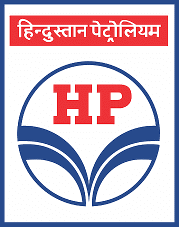
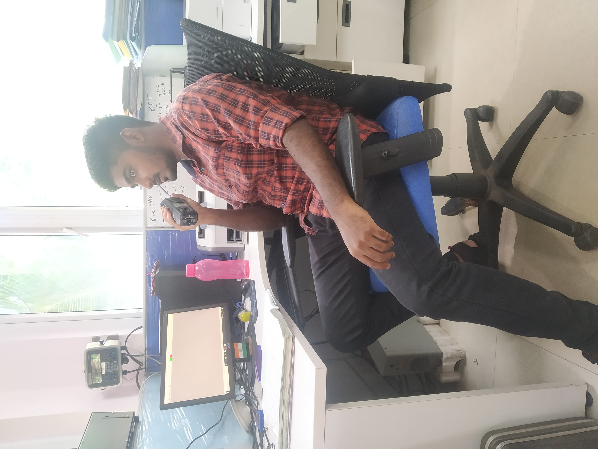
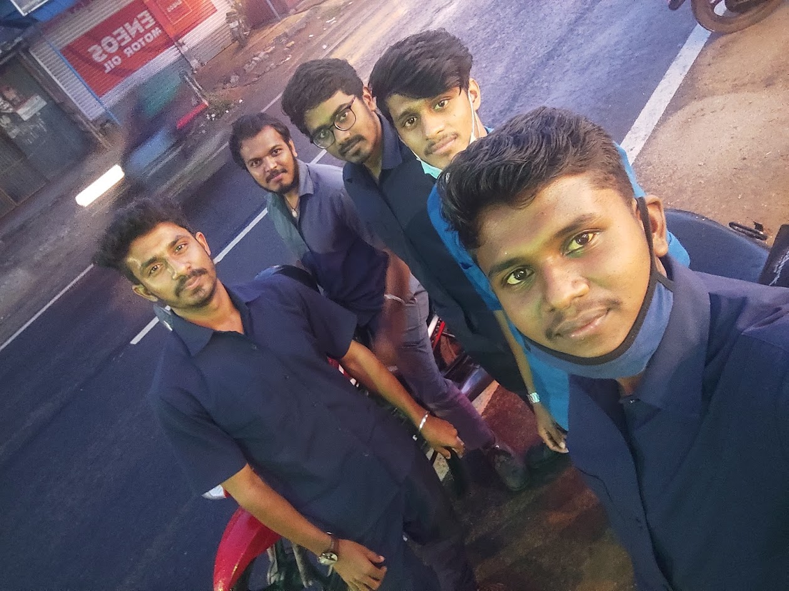

HINDUSTAN PETROLEUM CORPORATION LIMITED,
CASSIMODE, CHENNAI – 600 013
GRADUATE APPRENTICE TRAINEE (GAT) APRIL 22 – MARCH 23
Work Summary:
- Coordinate with Officers for both FO/LDO & Bitumen Pipeline Transport operation from Chennai Port Ocean tanker to the Terminal. Personally verifying the TTs Dip Rod and Ensure the TT Number, Capacity, Chaise No., validity period etc.., should be same as per the Calibration Certificate.
- Enforce and Develop Safety practices and conduct safety orientation sessions with concern officers for TT Crews to raise awareness and made reports to submit Location In Charge. Monitoring products movements between delivery, storage and outgoing areas and ensured with planning officer where the delivery lines are operating properly.
- Installation of MFM (Mass Flow Meter) under the TT Gantry Loading Area to control the excess load/flow of products. Maintain site records, Audit files, Monthly sales list, Master key record which is used to lock/unlock the TT for before and after Loading etc., Ensure all product levels in the Tanks are same as per the Reading given by system and physical dip reading separately. Assisted with entire operation that is Repair, clean, paint, etc.., which all comes under the work of calibration for Furnace Oil Tank 9 and ensured the tank for loading/unloading use after completion of calibration
- Identify the density and Temperature of the product (FO/LDO) through the sample and submit the records to the concern Planning officer after the product is suitable to deliver the customers. The complete assisted work with officers and Location In Charge for Installation of Bitumen Tank 8 Heater and Heat tracer Replacement work along with Thermopads Private Limited. Analyzed the working method of TT Gantry Height increasing work which is Currently commenced with help of site officers while loading.
Roles & Responsibilities:
- Perform work as directed by my officers.
- Ensure all the safety requirements for doing the operation safely are met as per HPCL std.
- Ensure Tare and Gross weight of the TT Through Weighment operation.
- Loading/Dispatching of tank trucks in TT Gantry as per HPCL Standards.
- Assist Monthly Mock Fire Drill operation with all Officers/Employees.
- Ensure Entire loading operation including pump operation and product loading is under control.
- Update the training/working records and handover when required.
- Responding to emergency oil leaks.
- Assisted with Employee to maintain Operation Registers.
C.R.I PUMPS PRIVATE LIMITED,
UNIT: RANSAR - 1, COIMBATORE - 641 035
QUALITY ASSURANCE ENGINEER (QA) APRIL 21 - MARCH 22
Work Summary:
- Inspected raw materials and finished products to verify quality and disposed items that did not meet safety requirements. Excellent skills in report writing, records management and problem-solving. Compared colors, shapes, textures, and grades of products and materials with color charts, templates, or samples to verify conformance to standards.
- Oversaw maintenance, calibration, and control of inspection, measuring, and all test equipment. Build and implement a quality management system in accordance with the principles of the latest ISO 9001 standard.Recommended changes to assembly and production linesbased on repeat product issues. Kept detailed records of quality and imperfect products. conducting calibration related inspection on projects and assists with quality audits.
- Support projects by contributing as a team member to the development of project schedules, costs, preparing status reports, attending team meetings, and communicating issues and progress to team and management. Test new or modified gauges, and work very closely with the design and outside suppliers. Checking data quality and correcting problems when issues are found. Create and manage the continual improvement of calibration guides, process flows, and standardization of calibration development.
- Also work with managers and supervisors to implement quality measures . Handling in DT like Tensile test, Elongation test, Bend test, Hardness test, Welding strength, Shear Strength, crimping strength etc..., Knowledge in Visual and Dimensional Inspections with the help of GD&T parameters.Conversant with Indian Standards and International codes & Standards like ISO, ASME, ASTM, AWS, API and ASQ specifications.
Roles & Responsibilities:
- To calibrate Measuring Instruments and Gauges according to IS Standards.
- Developing and implementing quality standards.
- Developing and implementing quality control systems and Monitoring and analyzing quality performance.
- Inspecting and testing materials, equipment, processes, and products to ensure quality specifications are met.
- Operate CMM, Profile Projector, UTM and other small testing machines.
- Responsible for Calibration, Testing, Inspection results and Maintain 5S Process.
- Collaborating with operations managers to develop and implement controls and improvements.